Xi WangPostdoctoral Fellow
Rm 1024, Ho Sin-Hang Engineering Building 

|
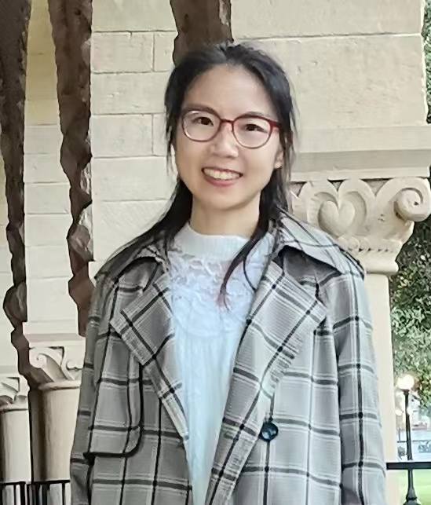 |
Biography
I am currently a post-doctoral fellow in the Department Computer Science and Engineering (CSE), The Chinese University of Hong Kong (CUHK). Before that, I worked as a post-doctoral fellow with Prof. Ruijiang Li at Stanford University and with Prof. HENG Pheng-Ann at CUHK, respectivaly. I received my Ph.D. degree in Computer Science and Engineering from CUHK in 2020, supervised by Prof. HENG Pheng-Ann and Prof. WONG, Tien-Tsin. Previously, I received her M.Sc. degree in Computer Science and Technology from Sichuan University in 2016, supervised by Prof. ZHANG Yi. I obtained my B.Eng. degree in Software Engineering from Southwest University in 2013.
My research interests are at the intersection of computer science, medical science, and physics, with special emphasis on deep learning, medical image analysis, and complex systems, strongly driven by the goal of improving human health. Over the past decade, I have been dedicated to developing novel deep learning approaches to streamline the workflow of clinical diagnosis, treatment planning, and prognosis for patients with chronic diseases, cancer, infectious diseases, and neurological diseases with high accuracy and efficiency at the lowest cost. I am currently working on longitudinal learning based on time series data for disease progression forecasting and computational methodology related to single-cell and spatial genomics.
News
- [10/2024] One paper on semi-supervised MRI segmentation was accepted by IEEE TMI.
- [10/2024] One paper on detection and segmentation of lung tumors on CT was accepted by Radiology.
- [10/2024] Our team won the 3nd Place on MICCAI LISA Challenge.
-
[07/2024] Survey on AI-based breast cancer imaging was sleceted as a
featured article
for IEEE RBME. - [06/2023] One paper on diffusion model for MRI reconstruction was early accepted by MICCAI.
-
[05/2023] One paper on latent diffusion model for glaucoma forecast was
early accepted
by MICCAI. - [03/2024] One paper was accepted by IEEE/ACM Transactions on Networking.
- [03/2024] One paper was accepted by Journal of the Royal Society Interface.
- [01/2024] One survey on Deep Learning in Breast Cancer Imaging was accepted by IEEE RBME.
- [11/2023] Two papers on OCT analysis was accepted by British Journal of Ophthalmology.
- [06/2023] One paper on fundus analysis for ROP was accepted by The Asia-Pacific Journal of Ophthalmology.
- [06/2023] One paper on multi-modal semi-supervised learning for cancer immunotherapy response prediction was accepted by Radiotherapy and Oncology.
- [06/2023] One paper on semi-supervised MRI segmentation was accepted by MICCAI.
- [02/2023] One paper on cancer aneuploidy prediction from WIS was accepted by IEEE JHBI.
- [07/2022] One paper on weakly multiple instance learning for OCT DME detection was accepted by MedIA.
- [03/2022] One paper on glaucoma and myopia feature detection was accepted by Frontiers in Medicine.
- [05/2021] One paper on OCT DME screening was accepted by Diabetes Care.
- [02/2021] One paper on deep semi-supervised medical image classification was accepted by MedIA.
- [01/2021] One paper on whole slide cervical image analysis was accepted by MedIA.
- [06/2020] One paper on learning imperfect multi-site ChestX-ray data was accepted by IEEE TMI.
- [03/2020] One paper on OCT glaucoma screening was accepted by MedIA. One paper on MIL for OCT classification was accepted by IEEE JBHI.
-
[08/2019] One paper was accepted by The Lacent Digital Health as
cover page
. One paper on lung cancer WSI classification was accepted by IEEE cybernetics. -
[06/2019] Two papers were
early accepted
by MICCAI. -
[05/2018] One paper on weakly supervised lung cancer WSI classification was accepted by MIDL (
Oral Presentation
).
Selected Publications [Google Scholar]
| 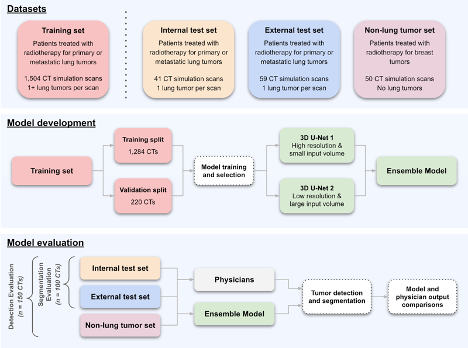 | Automated detection and segmentation of lung tumors on computed tomography images using deep learning. Mehr Kashyap, Xi Wang, Lei Xing, Ruijiang Li, and Michael Francis Gensheimer. Radiology, 2024. |

|
Effective semi-supervised medical image segmentation with probabilistic representations and prototype learning. Yuchen Yuan, Xi Wang, Xikai Yang and Pheng-Ann Heng. IEEE TMI, 2024. |
| 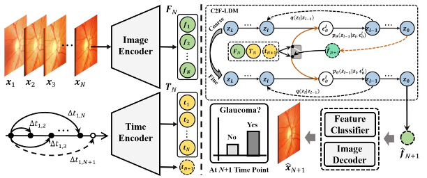 | Coarse-to-Fine latent diffusion model for glaucoma forecast on sequential fundus images. Yuhan Zhang, Xikai Yang, Xi Wang#, and Pheng-Ann Heng. MICCAI, 2024. |
| 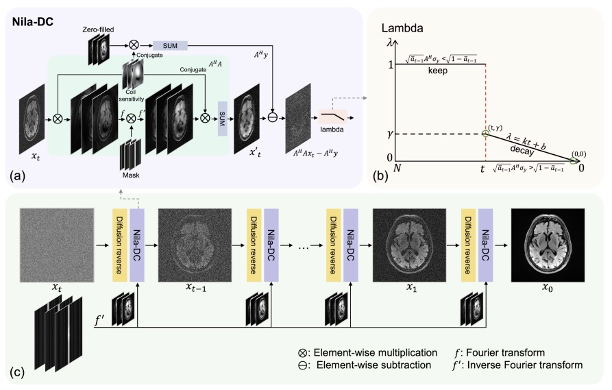 | Noise level adaptive diffusion model for robust reconstruction of accelerated MRI. Shoujin Huang, Guanxiong Luo, Xi Wang, Ziran Chen, Yuwan Wang, Huaishui Yang, Pheng-Ann Heng, Lingyan Zhang, Mengye Lyu. MICCAI, 2024. |

|
Fast outbreak sense and effective source inference via minimum observer set. Yang Liu*, Xi Wang*, Xiaoqi Wang, and Zhen Wang. IEEE/ACM Transactions on Networking, 2024. [paper] |

|
Developing a privacy-preserving deep learning model for glaucoma detection: a multi-centre study with federated learning. An-Ran Ran*, Xi Wang*, Pheng-Ann Heng, Clement C. Tham, Carol Y. Cheung. British Journal of Ophthalmology, 2024. [paper] |

|
Deep learning-based image quality assessment for optical coherence tomography macular scans: a multi-centre study. Ziqi Tang*, Xi Wang*, Hao Chen, Pheng-Ann Heng, Clement C. Tham, Carol Y. Cheung. British Journal of Ophthalmology, 2024. [paper] |

|
Individual-centralized seeding strategy for influence maximization in information-limited networks. Yang Liu, Xiaoqi Wang, Xi Wang#, Li Yan, Sinuo Zhao and Zhen Wang#. Journal of the Royal Society Interface, 2024. [paper] |

|
Development and validation of an interpretable model integrating multimodal information for improving ovarian cancer diagnosis. Huiling Xiang, Yongjie Xiao, Fang Li, Chunyan Li, Lixian Liu, Tingting Deng, Cuiju Yan, Fengtao Zhou, Xi Wang, Jinjing Ou, Qingguang Lin, Ruixia Hong, Lishu Huang, Luyang Luo, Huangjing Lin, Xi Lin, Hao Chen. Nature Communications, 2024. |

|
Efficient approaches for attaining epidemic-free networks with minimum edge removal set. Yang Liu, Guangbo Liang, Xi Wang#, Peican Zhu, and Zhen Wang#. Communications in Nonlinear Science and Numerical Simulation, 2024. [paper] |
| 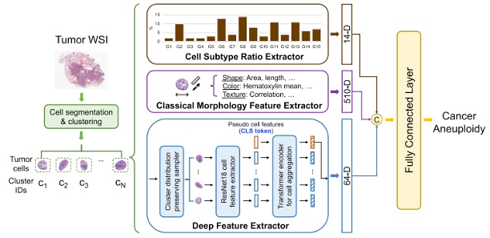 | Single-cell heterogeneity-aware transformer-guided multiple instance learning for cancer aneuploidy prediction from whole slide histopathology images. Feiyang Yu*, Xi Wang*, Rasoul Sali, and Ruijiang Li.. IEEE-JBHI, 2024. [paper] |

|
Deep learning in breast cancer imaging: A decade of progress and future directions. Luyang Luo, Xi Wang, Yi Lin, Xiaoqi Ma, Andong Tan, Ronald Chan, Varut Vardhanabhuti, Winnie CW Chu, Kwang-Ting Cheng, Hao Chen. IEEE Reviews in Biomedical Engineering, 2024. [paper] |

|
Diffusion containment in complex networks through collective influence of connections. Yang Liu, Guangbo Liang, Xi Wang#, Zhuoyu Wang, Peican Zhu, and Zhen Wang#. IEEE Transactions on Information Forensics and Security, 2024. [paper] |
| 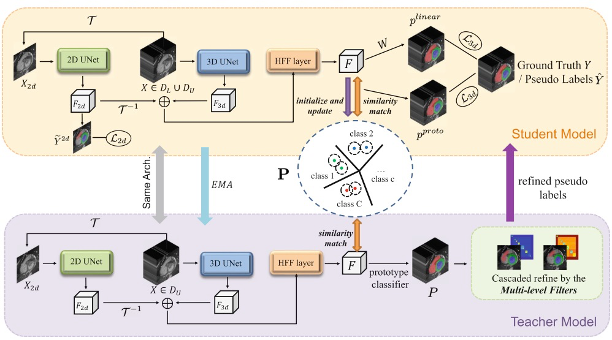 | Semi-supervised class imbalanced deep learning for cardiac MRI segmentation. Yuchen Yuan, Xi Wang#, Xikai Yang, and Pheng-Ann Heng. Diabetes Care, 2023. |

|
Diffusion source inference for large-scale complex networks based on network percolation. Yang Liu, Xiaoqi Wang, Xi Wang, Zhen Wang, and Jürgen Kurths. IEEE TNNLS, 2023. [paper] |

|
Cancer immunotherapy response prediction from multi-modal clinical and image data using semi-supervised deep learning. Xi Wang*, Yuming Jiang*, Hao Chen, Taojun Zhang, Zhen Han, Chuanli Chen, Qingyu Yuan, Wenjun Xiong, Wei Wang, Guoxin Li, Pheng-Ann Heng and Ruijiang Li. Radiotherapy and Oncology, 2023. [paper] |

|
Deep learning-assisted diagnosis of breast lesions on US images: a multivendor, multicenter study. Huiling Xiang*, Xi Wang*, Min Xu, Hao Chen, Pheng-Ann Heng, Xi Lin. Radiology: Artificial Intelligence, 2023. [paper] |

|
An artificial intelligence system for screening and recommending the treatment modalities for retinopathy of prematurity. Yaling Liu, Yueshanyi Du, Xi Wang, Xinyu Zhao, Sifan Zhang, Zhen Yu, Zhenquan Wu, Dimitrios P Ntentakis, Ruyin Tian, Yi Chen, Cui Wang, Xue Yao, Ruijiang Li, Pheng-Ann Heng, and Guoming Zhang. The Asia-Pacific Journal of Ophthalmology, 2021. [paper] |

|
Deep semi-supervised multiple instance learning with self-correction for DME classification from OCT images. Xi Wang, Fangyao Tang, Hao Chen, Carol Y. Cheung, and Pheng-Ann Heng. Medical Image Analysis, 2023. [paper] |

|
Rethinking annotation granularity for overcoming shortcuts in deep learning–based radiograph diagnosis: a multicenter study. Luyang Luo, Hao Chen, Yongjie Xiao, Yanning Zhou, Xi Wang, Varut Vardhanabhuti, Mingxiang Wu, Chu Han, Zaiyi Liu, Fang, Xin Hao Benjamin, TSOUGENIS Efstratios, Huangjing Lin, and Pheng-Ann Heng. Radiology: Artificial Intelligence, 2022. [paper] |

|
Three-dimensional multi-task deep learning model to detect glaucomatous optic neuropathy and myopic features from optical coherence tomography scans: a retrospective multi-centre study. An-Ran Ran*, Xi Wang*, Poemen P Chan, Noel C Chan, Mandy O M Wong, Hon-Wah Yung, Robert T Chang, Suria S Mannil, Yih Chung Tham, Ching-Yu Cheng, Hao Chen, Fei Li, Zhang Xiulan, Pheng-Ann Heng, Clement C Tham, Carol Y Cheung. Frontiers in Medicine, 2022. [paper] |

|
A multitask deep-learning system to classify diabetic macular edema for different optical coherence tomography devices: a multicenter analysis. Fangyao Tang, Xi Wang, Hao Chen, Pheng-Ann Heng, Carol Y Cheung. Diabetes Care, 2021. [paper] |

|
Deep virtual adversarial self-training with consistency regularization for semi-supervised medical image classification. Xi Wang, Hao Chen, Huiling Xiang, Huangjing Lin, Xi Lin, Pheng-Ann Heng. Medical Image Analysis (MedIA), 2021. [paper] |

|
Dual-path network with synergistic grouping loss and evidence driven risk stratification for whole slide cervical image analysis. Huangjing Lin, Hao Chen, Xi Wang, Qiong Wang, Pheng-Ann Heng. Medical Image Analysis (MedIA), 2021. [paper] |

|
Towards multi-center glaucoma OCT image screening with semi-supervised joint structure and function multi-task learning. Xi Wang, Hao Chen, An-ran Ran, Luyang Luo, Poemen P Chan, Clement C Tham, Robert T Chang, Suria S Mannil, Carol Y Cheung, Pheng-Ann Heng. Medical Image Analysis (MedIA), 2020. [paper] |
| 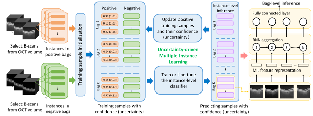 | UD-MIL: Uncertainty-driven Deep Multiple Instance Learning for OCT Image Classification. Xi Wang*, Fangyao Tang*, Hao Chen, Luyang Luo, Ziqi Tang, An-Ran Ran, Carol Y Cheung, Pheng Ann Heng. IEEE Journal of Biomedical and Health Informatics (IEEE JBHI), 2020. [paper] |
| 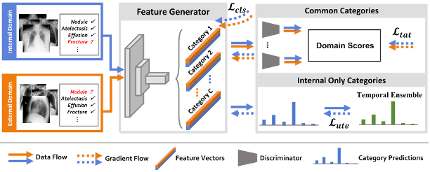 | Deep mining external imperfect data for chest X-ray disease screening. Luyang Luo, Lequan Yu, Hao Chen, Quande Liu, Xi Wang, Jiaqi Xu, Pheng-Ann Heng. IEEE Transactions on Medical Imaging (TMI), 2020. [paper] |
| 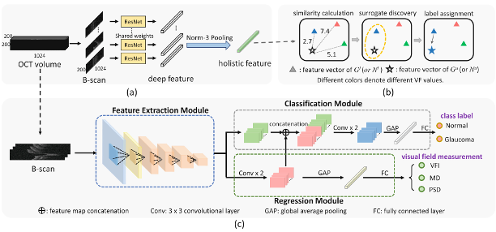 | Unifying structure analysis and surrogate-driven function regression for glaucoma OCT image screening. Xi Wang, Hao Chen, Luyang Luo, An-ran Ran, Poemen P Chan, Clement C Tham, Carol Y Cheung, Pheng-Ann Heng. Medical Image Computing and Computer Assisted Intervention (MICCAI), 2019. [paper] |
| 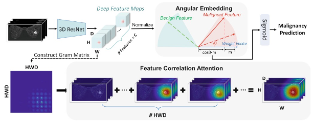 | Deep Angular Embedding and Feature Correlation Attention for Breast MRI Cancer Analysis Luyang Luo, Hao Chen, Xi Wang, Qi Dou, Huangjing Lin, Juan Zhou, Gongjie Li, Pheng-Ann Heng Medical Image Computing and Computer Assisted Intervention (MICCAI), 2019. [paper] |
| 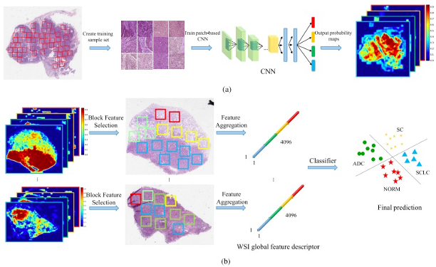 | Weakly Supervised Deep Learning for Whole Slide Lung Cancer Image Analysis. Xi Wang, Hao Chen, Caixia Gan, Huangjing Lin, Qi Dou, Efstratios Tsougenis, Qitao Huang, Muyan Cai, Pheng-Ann Heng. IEEE Transactions on Cybernetics (IEEE TCYB), 2019. [paper] |
|
|
Framework of evolutionary algorithm for investigation of influential nodes in complex network Yang Liu, Xi Wang, Jürgen Kurths IEEE Transactions on Evolutionary Computation (IEEE TEC), 2019. [paper] |

|
Optimization of targeted node set in complex networks under percolation and selection Yang Liu, Xi Wang, Jürgen Kurths Physical Review E (PRE), 2019. [paper] |

|
Detection of glaucomatous optic neuropathy with spectral-domain optical coherence tomography: a retrospective training and validation deep-learning analysis. An Ran Ran, Carol Y Cheung, Xi Wang, Hao Chen, Luyang Luo, Poemen P Chan, Mandy OM Wong, Robert T Chang, Suria S Mannil, Alvin L Young, Hon-wah Yung, Chi Pui Pang, Pheng-Ann Heng, Clement C Tham. The Lancet Digital Health, 2019. |
| 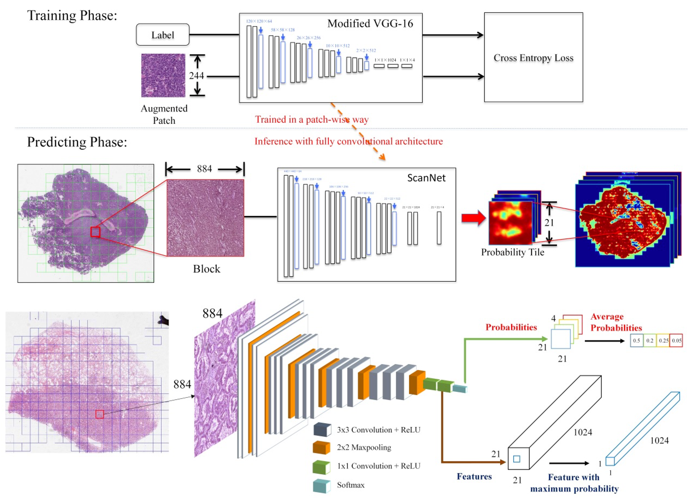 | Weakly supervised learning for whole slide lung cancer image classification. Xi Wang, Hao Chen, Caixia Gan, Huangjing Lin, Qi Dou, Qitao Huang, Muyan Cai, Pheng-Ann Heng. International Conference on Medical Imaging with Deep Learning (MIDL), 2018. (Oral, Student Travel Award) [paper] |
| 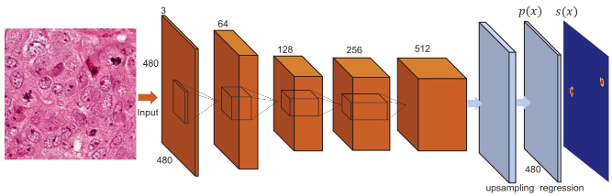 | Automated mitosis detection with deep regression networks. Hao Chen, Xi Wang, Pheng-Ann Heng. IEEE International Symposium on Biomedical Imaging (ISBI), 2016. [paper] |
| 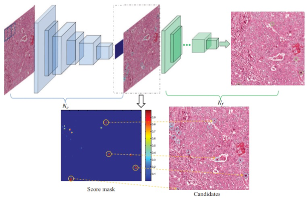 | Mitosis detection in breast cancer histology images via deep cascaded networks. Hao Chen, Qi Dou, Xi Wang, Jing Qin, and Pheng-Ann Heng. Proceedings of the Thirtieth AAAI Conference on Artificial Intelligence (AAAI), 2016. [paper] |
| 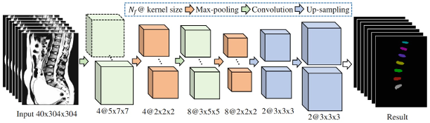 | 3D fully convolutional networks for intervertebral disc localization and segmentation. Xi Wang, Hao Chen, Caixia Gan, Huangjing Lin, Qi Dou, Qitao Huang, Muyan Cai, Pheng-Ann Heng. International Conference on Medical Imaging and Virtual Reality (MIAR), 2016. (Best Paper Award) [paper] |
Selected Awards
| 3rd Place, Low-field Pediatric Brain MRI Segmentation (LISA Challenge in MICCAI'24), 2024 |
| Seed Grant Award (Top 3%), Medical Physics Division, Stanford University, 2023 |
| Student Travel Award at the 1st APOIS Meeting, 2020 |
| 2nd Prize of Best Free Paper at the 1st APOIS Meeting, 2020 |
| Student Travel Award at the 1st MIDL Conference, 2018 |
| Champion, Intervertebral Disc (IVD) Localization from 3D MRI data, 2015 MICCAI IVD Localization Challenge. |
| Champion, Detection of Abnormalities in Gastroscopic Images in iterms of Highest Pixel Level Classification Score, 2015 MICCAI Endoscopic Vision Challenge |
| Teaching Assistant of Merit, 2018-2019 |
| Best Paper Award at MIAR, 2016 |
| National Scholarship in China, 2010,2012 |
| National Encouragement Scholarship in China, 2011 |
Professional Services
Medical Image Computing and Computer Assisted Intervention (MICCAI’20-24)
Medical Image Understanding and Analysis (MIUA' 22)
[Meta Reviewer]
International Conference on Learning Representations Trustworthy Machine Learning for Healthcare Workshop (ICLR-TML4H)
[Meta Reviewer & Area Chair]
IJCAI-2024 The Second Workshop on Trustworthy Artificial Intelligence for Healthcare (IJCAI-TAI4H' 24)
[Program Committee]
SN Computer Science
[Associate Editor]
Scientific Reports
[Editorial Board Member]
Computerized Medical Imaging and Graphics
special issue
on Trustworthy Artificial Intelligence for Medical Imaging[Guest Editor]
IEEE Transactions on Pattern Analysis and Machine Intelligence
npj Digital Medicine
Computer Methods and Programs in Biomedicine
IEEE Transactions on Neural Networks and Learning Systems
IEEE Transactions on Multimedia
IEEE Access
Computer Methods and Programs in Biomedicine
Artificial Intelligence in Medicine
Artificial Intelligence Review
International Journal of Machine Learning and Cybernetics
International Journal of Intelligent Systems
Medical Image Analysis (MedIA)
IEEE Transactions on Medical Imaging (TMI)
IEEE Transactions on Cybernetics
IEEE Journal of Biomedical and Health Informatics (JBHI)
World Journal of Radiology
Frontiers in Artificial Intelligence/Oncology/Physics/Radiology/Immunology
Computers & Graphics
International Journal of Intelligent Systems
Teaching
| 2018-2019 | Spring | Engineering Design |
| 2018-2019 | Fall | Engineering Design |
| 2017-2018 | Spring | Engineering Design |
| 2017-2018 | Fall | Engineering Design |
| 2016-2017 | Spring | Engineering Design |
| 2016-2017 | Fall | Java Programming |
© Xi Wang | Last updated: Oct 2024